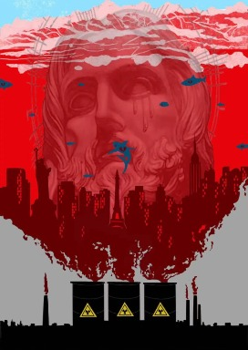
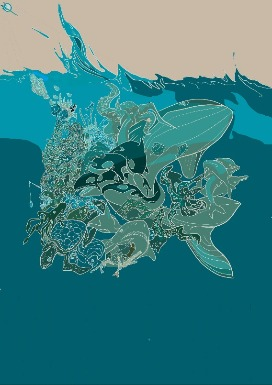
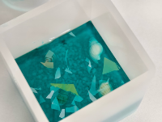
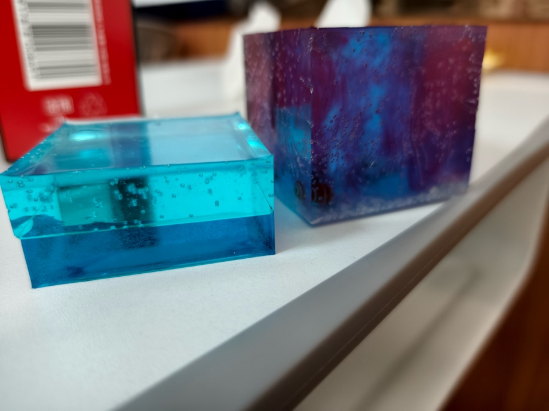
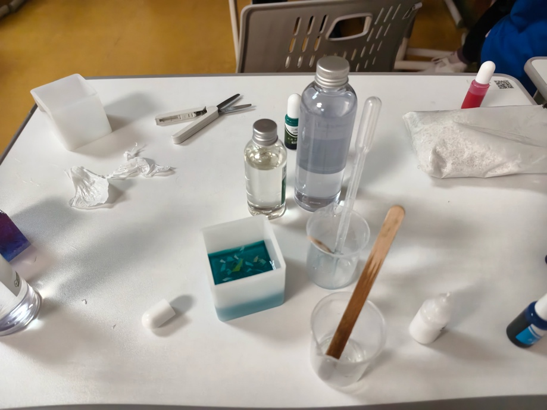
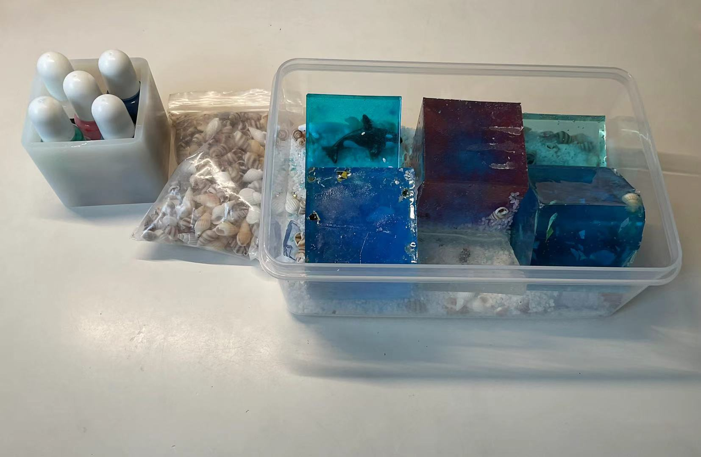

Red tide
By Dora

Overfishing
By Veronica
The first cubic is blue with red, red dyes represent the red tide (dinoflagellate), we create this cubic as the “tide” usually float on the surface of water to gain nutrients by photosynthesis. That harms the ‘vested interest’ organisms due to less sunlight is available for them. The main reason for the phenomenon is organic fertilizers are emitted into sea.
Further more, if we eat the seafood that were die of the toxin released by the dinoflagellate, our liver is in a danger!
The second cubic reflects Ocean plastic pollution, refers to the accumulation of plastic debris and particles in the world's oceans, adversely impacting marine ecosystems, wildlife, and human health. This global environmental issue arises from improper disposal and inadequate recycling of plastic waste, leading to widespread contamination of marine habitats and posing significant challenges for biodiversity and ocean health.



